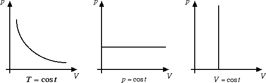
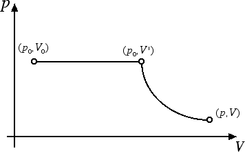

Gas ideali
Equazione di stato dei gas perfetti
In questa sezione vogliamo vedere come esista il modo per riassumere in un'unica equazione la legge di Boyle, la legge di Avogadro e le leggi di Gay-Lussac. Prima di ricavarci questa equazione vogliamo rappresentare la legge di Boyle e la legge di Gay-Lussac nel piano di Clapeyron. Il piano di Clapeyron è un diagramma cartesiano che ha in ascissa il volume e in ordinata la pressione del gas. Un gas viene ad essere univocamente determinato da un punto nel piano di Clapeyron: infatti la quantità di gas n è un numero generalmente fissato e, come vedremo derivando la legge dei gas perfetti, la conoscenza della pressione p e del volume V determina in maniera univoca la temperatura T del gas.
Il grafico della legge di Boyle sul piano di Clapeyron è dato da un ramo d'iperbole. Le leggi di Gay-Lussac sono rappresentate invece da due semirette parallele agli assi cartesiani.

Supponiamo di considerare una mole di gas e di partire da un certo punto (p0, V0) del piano di Clapeyron caratterizzato da pressione p0 = 1 atm e volume V0 = 22.4 l. Realizziamo una trasformazione isobara (ossia a pressione costante) seguita da una trasformazione isoterma (ossia a temperatura costante) come nella figura sottostante:

La trasformazione isoterma è regolata dalla legge di Boyle: p · V = p0 · V', mentre quella isobara è regolata dalla legge di Gay-Lussac V' = V0 · T / T0, dove T0 = 273.15 K. Mettendo assieme queste due relazioni otteniamo: p · V = (p0 · V0 / T0) T = R · T. La costante R si ricava dai valori di p0, V0 e T0. Il valore che si ottiene è R = 8.31 J / (K · mole). Se invece di avere una mole di gas ne abbiamo n l'equazione per i gas diventa p · V = n · R · T. Questa è l'equazione di stato dei gas perfetti, valida a patto di esprimere la temperatura T in gradi Kelvin. Tale equazione riassume in sé tutte le altre equazioni. Infatti a T costante ritroviamo la legge di Boyle: p · V = costante. A V costante riotteniamo che p è proporzionale a T mentre a p costante riotteniamo che V è proporzionale a T, ossia le due leggi di Gay-Lussac.
Per concludere, vogliamo sottolineare come l'equazione di stato dei gas perfetti p V = n R T valga nel caso di trasformazioni reversibili, ossia di trasformazioni lente che comportano passaggio da uno stato di equilibrio all'altro. Infatti, se la trasformazione avviene troppo velocemente, il gas diventa turbolento e la trasformazione irreversibile non può essere descritta tramite l'equazione di stato dei gas perfetti. Non solo, ma l'equazione dei gas perfetti descrive il comportamento dei gas reali tanto meglio quanto minore è la pressione del gas e quanto maggiore è la temperatura.
Ad esempio, l'aria in condizioni normali può essere descritta con buona approssimazione tramite l'equazione di stato dei gas perfetti. Infatti una mole d'aria alla temperatura ambiente, T = 293 K, e alla pressione p = 1 atm = 1.013 · 105 Pa occupa un volume V = n R T / p = 24 l, non troppo diverso dai 22.4 litri previsti dalle leggi dei gas ideali.